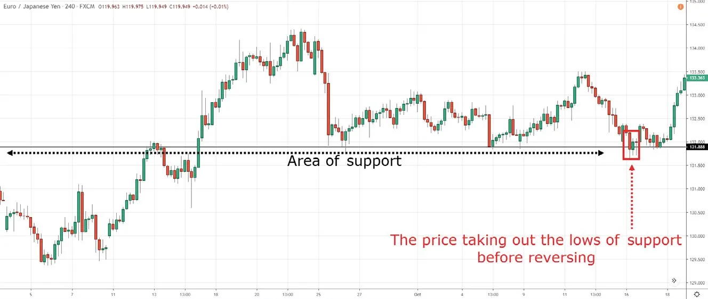
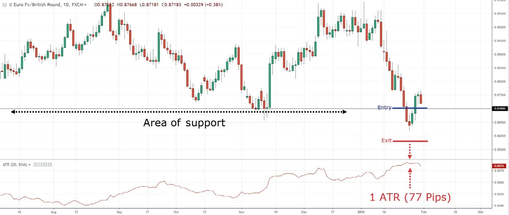
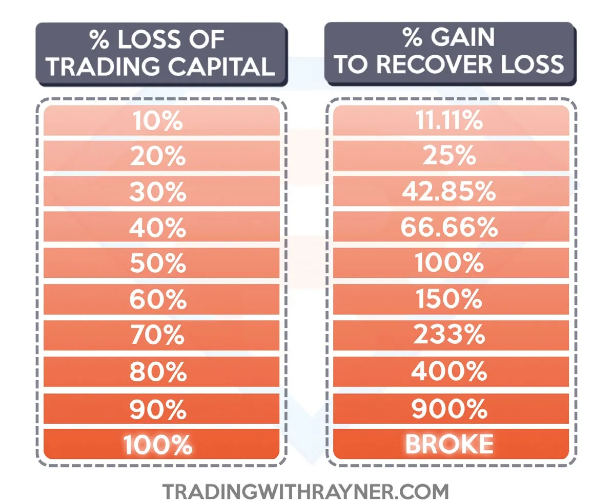
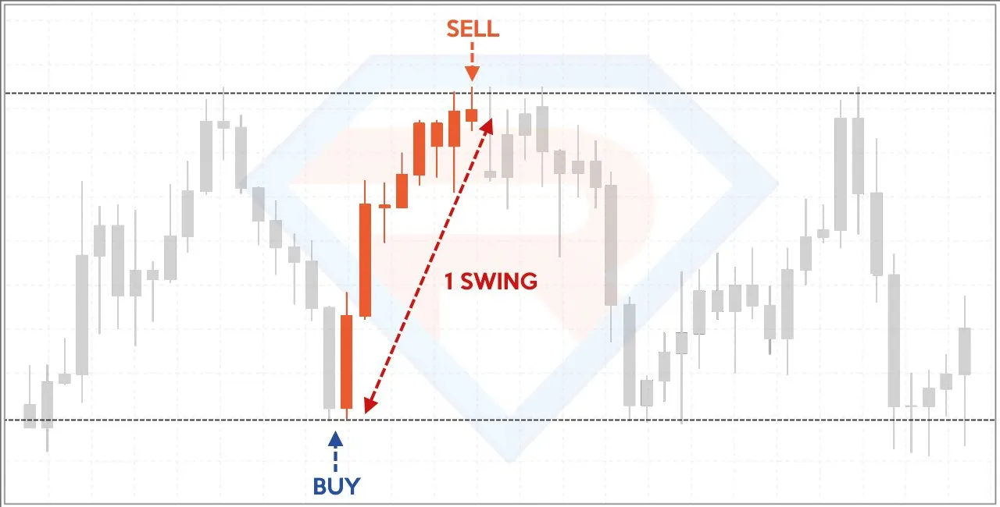
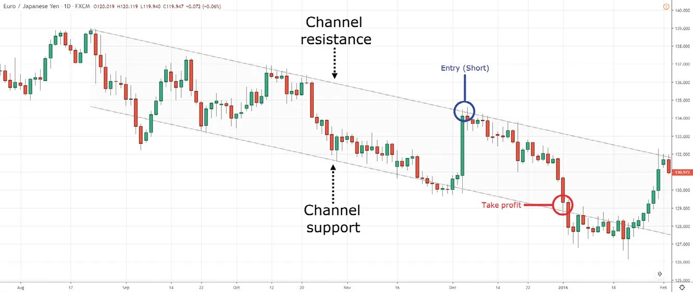
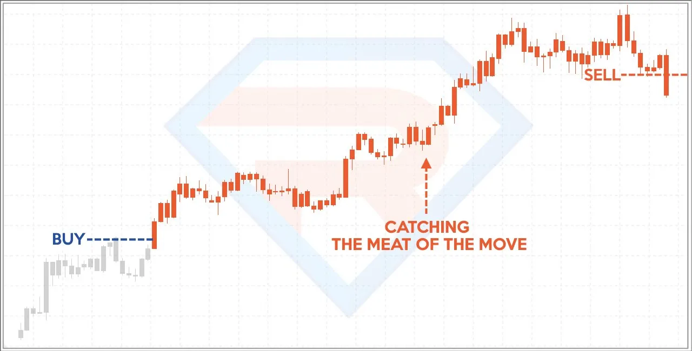
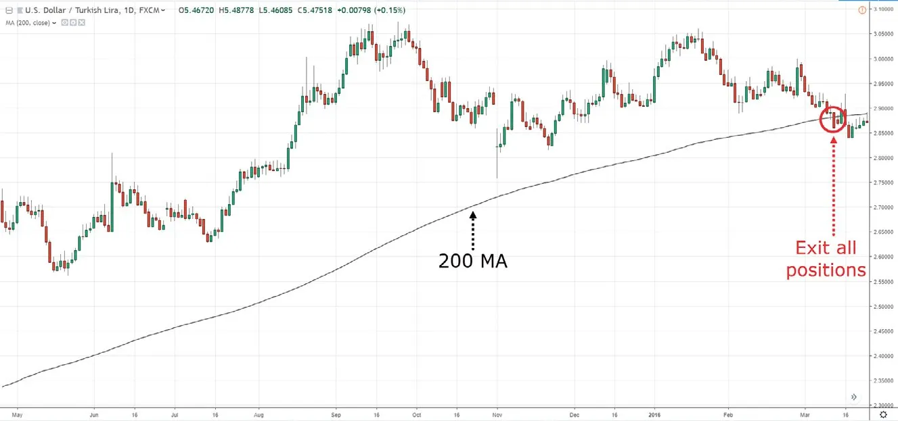
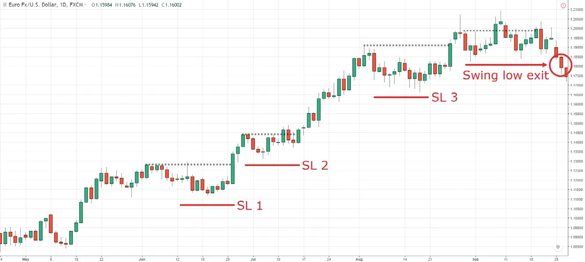

During the 2008 financial crisis, I knew of a trader who made a million dollars a year trading on the futures market. He traded large, putting on a few hundred contracts at a time, and it was not uncommon to see his P&L swing six figures up and down—within a day.
Can you guess what he is doing right now? He drives a cab for a living. Now, don’t get me wrong, I’ve got nothing against cab drivers. The point I’m trying to make is this: You can trade like a king and make sick money, but if you don’t manage your risk, it’s only a matter of time before you lose it all.
Paul Tudor Jones once said, “The most important rule of trading is to play great defense, not great offense.” This couldn’t be truer, and that’s why I’ve dedicated an entire chapter to helping you manage your risk so you can survive in this business.
So in this section, you’ll learn the truth about stop hunting, how to set a proper stop loss, apply proper risk management to your trading, calculate the optimal position size for your trades, and how to manage your trades to capture a swing or ride massive trends. Sound good? Then let’s roll…
The market exists to facilitate transactions between buyers and sellers. The more buyers and sellers transact, the more efficient the market will be. This leads to greater liquidity (the ease of which buying/selling can occur without moving the markets).
If you’re a retail trader, liquidity is hardly an issue for you since your size is small. But for an institution, liquidity is the main concern. Imagine this:
You manage a hedge fund, and you want to buy one million shares of ABC stock. You know support is at $100 and ABC stock is trading at $110. If you were to enter the market, you’d likely push the price higher and get filled at an average price of $115. That’s $5 higher than the current price. So what do you do?
Well, you know $100 is an area of support, and chances are there’ll be a cluster of stop-loss positions below this (from traders who are long on ABC stock).
So if you can push the price lower to trigger these stops, there’ll be a flood of sell orders hitting the market (since traders who are long will exit their losing position).
With the amount of selling pressure coming in, you could buy your one million shares of ABC stock from these traders. This gives you a better entry price than hitting the market and suffering a $5 slippage.
In other words, if an institution wants to long the markets with minimal slippage, they tend to place a sell order to trigger nearby stop losses.
This allows them to buy from traders, thereby cutting their losses, which offers them a more favorable entry price. Look at your charts, and you’ll often see the market taking out the lows of support, only to trade higher subsequently.
Here’s an example:
This means you don’t want to set your stop loss just below the lows of support or above the highs of resistance because it’s easy to get stop hunted. Also, you don’t want to set your stop loss based on how you feel or how much money is left in your account because the market doesn’t care about any of these things. So what now?
When you set your stop loss, you want to have a “barrier” working in your favor to prevent the price from moving against you. These “barriers” can be things like support and resistance, swing highs and lows, trendlines, etc.
This means that when you set a stop loss, you want to lean against an area of value because the market will face difficulty breaking through. Make sense?
Great. Here’s how to do it.
First, identify the area of value. Then add a “buffer” to it so you don’t get stopped out just because the price spiked through the lows of support.
For an example, let’s say your area of value is at support, so what you’ll do is identify the lows of support and subtract 1 ATR from the lows (for short trades, you add 1 ATR to the highs of resistance).
Here’s what I mean:
Also, when you set a stop loss, it should be at a level that invalidates your trading setup. For example, if you’re buying the breakout of a bull flag, your stop loss should be below the lows of the bull flag because anywhere above it, the bull flag pattern is still intact. But below its lows, the bull flag is “destroyed,” and your trading setup is invalidated.
Next, you’ll learn how to calculate the optimal position size of your trades so you don’t blow up your account. Let’s go…
The secret to risk management lies in this diagram below:
As you can see, if you lose 10% of your trading capital, you’ll need to earn 11.11% to get back to breakeven. If you lose 50% of your capital, you’ll need a 100% return to get back to breakeven. And if you hit a drawdown of 90%, you’ll need a return of 900% before you break even (good luck with that).
The secret to risk management is to lose small when you’re wrong so you never hit a level of drawdown that’s impossible to recover from. That’s why you want to risk a fraction of your capital on every trade (my suggestion is not more than 1%). This means if you have 20 losing trades in a row, your drawdown will be about 20%. This won’t be the end of the world, and you can still live to fight another day.
Now the question is, how many units do you trade if you only want to risk 1% of your trading account? Here’s the formula for forex trading:
Position size = Amount you’re risking / (stop loss * value per pip)
Let me give you an example:
Plug the numbers into the formula and you get:
Position size = 100 / (200*10)
= 0.05 lot (or five micro lots)
This means you can trade five micro-lots on GBP/USD with a stop loss of 200 pips. And if it hits your stop loss, the loss on this trade is $100 (which is 1% of your trading account), excluding slippage. Now, what about stocks?
The formula for stocks is slightly different, but the concept is the same:
Position size = amount you’re risking/(size of your stop loss)
Let me give you an example:
So how many shares of McDonald’s can you buy?
Plug the numbers into the formula and you get:
Position size = 500 / 2.5
= 200 shares
This means you can buy 200 shares of McDonald’s with a stop loss of $2.50. If it’s triggered, the loss on this trade is $500 (which is 1% of your trading account).
So you’ve learned how to manage your risk and take care of your downside. But if the market moves in your favor, what’s next? How do you know when to exit your winners? That’s what you’re going to learn next.
A swing refers to “one move” in the markets. The idea of capturing a swing (also known as swing trading) is to exit your winners before opposing pressure comes in. Here’s an example:
The advantage of capturing a swing is that you endure “less pain” because you exit your trade before the market reverses against you. This improves your consistency and your winning rate. But the downside is that you’ll miss big moves in the market as you exit your trades too early.
So if this approach is for you, then the key thing is to exit your trades before opposing pressure steps in. This means if you’re long, you’ll want to exit your trade before selling pressure comes in. And where would that be? Possibly at swing lows, support, the lower channel, etc.
Here’s an example:
The only way you’ll ever ride a trend is to use a trailing stop loss. This means you progressively shift your stop loss higher as the market moves in your favor. Here’s what I mean:
The beauty of riding a trend is that you can reap massive profits doing little to no work. You can expect your average gains to be two-to-three times larger than your losses. But, there’s always a but, right? The downside is that you’ll only win 30%-45% of the time, you could give back 30%-50% of your open profits, and it’s common to have your winners turn to losers.
Psychologically, riding a trend is one of the most difficult things for traders to do. But if this approach is for you, the key is to embrace your losses and adopt a proper trailing stop-loss technique. So how do you trail your stop loss? There are many ways to do this, like moving average, average true range, market structure, etc.
Let me give you an example using moving average. If you want to ride a long-term uptrend, you can trail your stop loss with the 200-day moving average. This means you’ll only exit the trade if the price closes below the 200-day moving average; otherwise, you hold onto it (and it’s just the opposite for a downtrend). Here’s an example:
In addition, you can tweak the moving average to accommodate the type of trend you want to capture. If you want to ride a medium-term trend, you can trail your stop loss with the 100-day moving average. Or, if you want to ride a longer-term trend, you can use the 300-day moving average.
Another way to trail your stop loss is by using market structure. As you know, an uptrend consists of higher highs and lows. So what you do is trail your stop loss using the previous swing low. This means if the price closes below the previous swing low (by more than one 1 ATR), you’ll exit the trade (and vice versa for a downtrend). Here’s what I mean:
Unlike moving average, market structure is subjective because it requires discretion when you’re identifying the swing highs/lows. So if you prefer something more objective, use moving average to trail your stop loss.
Finally, you can combine both approaches to capture a swing and ride a trend. Here’s how it works. Let’s say you’re in a long position and the market has come into an area of resistance. You’re not sure if the price could break out higher or not. So what now? Do you take all your profits and just capture a swing? And what if the price breaks out higher and you miss a good chunk of the move?
Well, what you can do is sell some of your position at resistance and hold the remaining portion to see if the price breaks out higher. If it does, you’ll have the potential to ride the trend higher. If the price doesn’t break out higher but reverses instead, then you’ll get stopped out on the remaining position. But at least your earlier position closed at a profit (and this will subsidize some of your losses).
Now, if you want to adopt this approach, my suggestion is to exit no more than 50% of your position for the first target because if you exit with anything more than that, the remaining position won’t make much of a difference to your bottom line.
For example, if you exit 90% of your position at resistance and hold onto the remaining 10%, even if your remaining position gives you a 1:10 risk-to-reward ratio, the net profit is only a gain of 1R (since it’s 10% of your original position size).
What about the downsides? Well, there are two:
By now you should realize that there’s no best method, strategy, technique, or whatever in trading. There are always pros and cons with any action you choose. So the key isn’t finding the holy grail but finding a method you can embrace and execute consistently.
You’ve learned the essentials of risk and trade management. Specifically, we’ve covered how to avoid stop hunting, how to set a proper stop loss, how to calculate your optimal position size, and how to exit your trade to capture a swing or ride a trend.
Whew!
Now, this is where things get interesting because we’re going to put the pieces of the puzzle together so everything makes sense to you (I promise). So read on.